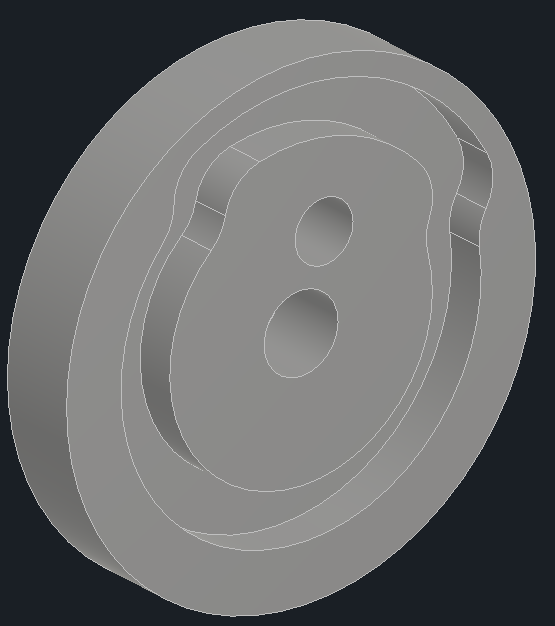
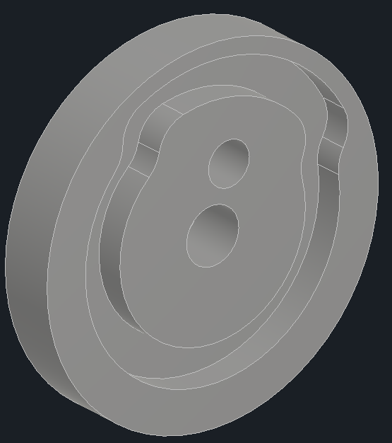
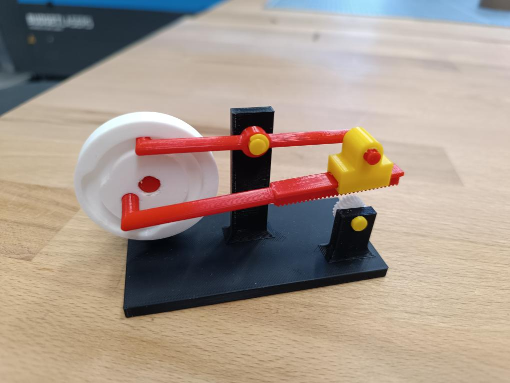

⚙️ Úkol 3: Návrh a Tisk Komplexního Mechanického Převodu
Zadáním tohoto úkolu byla výroba jednoduchého mechanismu na ruční pohon s limitem 100g filamentu, který by demonstroval použití volného uložení a uložení s přesahem.
Rozhodl jsem se pojmout toto zadání jako výzvu a navrhnout od základu vlastní, pokročilejší mechanické řešení.
Výsledkem je "Dávkovač" – kompaktní převodovka, která převádí kontinuální rotační pohyb (vstupní klika) na přerušovaný (dávkovaný) rotační pohyb (výstupní pastorek). Tento typ převodu je základem pro montážní linky nebo podavače.
Fáze 1: Koncept a Návrh v Autodesk Inventor
Cílem bylo vytvořit mechanismus, kde by výstupní hřídel vykonávala pouze částečné otáčky, přestože vstup je plynulý. Toho bylo dosaženo synchronizací čtyř klíčových komponent.
Prvním a řídícím srdcem systému je hybridní klika/vačka (bílý díl). Tento díl funguje duálně: jako klika poskytuje přes excentrický čep pohon pro pohybovou páku (červená) a zároveň jako vačka má na jedné straně specifický profil, po kterém klouže vahadlo (červené).
Dále je zde ozubený hřeben, který je součástí pohybové páky a vykonává posuvný a částečně otáčivý pohyb. Na něj navazuje vahadlo (červený díl), které sleduje vačkový profil a v závislosti na poloze zvedá nebo spouští celý modul s hřebenem. Poslední komponentou je výstupní pastorek (bílý díl), který odvádí přerušovaný otáčivý pohyb jinam.
Princip funkce: Když se bílé kolo otáčí, klika posouvá hřeben vpřed. Zároveň vačkový profil v této fázi přitlačí vahadlo dolů, čímž dojde k zařazení – zuby hřebene zapadnou do pastorku a pootočí jím. Ve druhé fázi (při zpětném pohybu hřebene) vačka naopak vahadlo zvedne, celý hřeben se vyřadí a vrátí se do své původní polohy naprázdno, aniž by otočil pastorkem zpět. Tím je zajištěn dávkovaný, jednosměrný pohyb.
 

Fáze 2: Design pro Aditivní Výrobu
Proces návrhu byl silně zaměřen na klíčovou výzvu 3D tisku: precizní řízení tolerancí pro funkční sestavy.
Pro volné uložení (vůle), které mělo zajistit plynulý kluzný a rotační pohyb (např. čepy v základně, klika v páce, vahadlo), byl v Inventoru navržen konstrukční rozměr. Původní návrh počítal s konstrukční vůlí 0.2 mm. Ačkoliv byl mechanismus funkční, empirické testování po sestavení ukázalo, že tato tolerance vede k nežádoucímu tření a tuhému chodu. Jako optimální byla pro tuto aplikaci a tiskárnu Prusa MK4S následně stanovena a doporučena revidovaná vůle 0.3 mm, která zajišťuje dokonalou plynulost.
Pro uložení s přesahem (press-fit), tedy pevné, nerozebiratelné spoje (konkrétně nalisování pohybové páky do klikového kola), byla využita specifická výhoda aditivní výroby. Na rozdíl od konvenčního obrábění, kde se pro press-fit typicky zvětšuje průměr hřídele, zde byl v Inventoru navržen otvor záměrně o 0.1 mm menší než čep. Tato metoda návrhu "díra na mínus" se ukázala jako vysoce efektivní a spoj je po nalisování naprosto pevný i bez lepidla.
Fáze 3: Realizace a Montáž
Jednotlivé komponenty byly připraveny v PrusaSliceru a vytištěny z materiálu PLA na tiskárně Prusa MK4S. Pro tisk byl zvolen profil "Structural" s výškou vrstvy 0.2 mm pro zajištění dobré mechanické odolnosti. Různých barev bylo dosaženo tiskem jednotlivých dílů odděleně v dávkách, nikoliv vícebarevným tiskem.
Celková spotřeba filamentu byla pouhých 48 gramů, což pohodlně splnilo limit 100 gramů.
Závěrečná Reflexe
Mechanismus "Dávkovač" fungoval na první pokus přesně dle návrhového záměru. Klíčovým přínosem projektu není jen samotný funkční model, ale především praktické ověření a stanovení optimálních konstrukčních tolerancí pro volná a pevná uložení v FDM tisku.
Projekt úspěšně demonstruje, jak je možné přetavit komplexní mechanickou myšlenku (synchronizovaný přerušovaný převod) z digitálního návrhu ve funkční, robustní a přesný fyzický prototyp.
